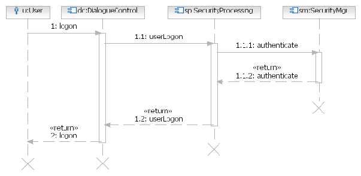
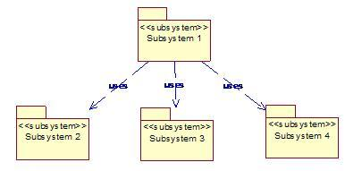
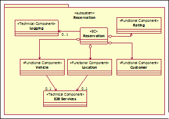
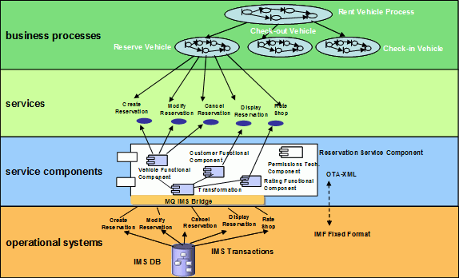

| Work Product (Artifact): Component Model (ART 0515) |
 |
|
The purpose of the component model is to help organize projects, manage the complexity of the solution, and ensure that all architecturally requirements have been addressed. It helps developers design and implement the solution and understand the big picture of the system design. To document subsystems and relevant relationships and dependencies, and delineate the service, functional and technical components that each subsystem will contain in a solution based on service oriented principles. Subsystems provide the bridge from a business function view to an IT function view. During service component specification, this artifact is used to:
Note for pre-sale solution design (Team Solution Design users): In a pre-sale context, the component model is used:
|
| Roles | Responsible: | Modified By: | |
|---|---|---|---|
| Input To | Mandatory: | Optional:
| External:
|
| Output From | |||
| Main Description |
The component model describes the structure of a system in terms of its software components with their
responsibilities, interfaces, relationships, and the way they collaborate to deliver the required functionality. The
component model is the main artifact documenting the functional view of the architecture and serves as an abstraction
of the design. Components identified may be decomposed into further component models before they complete the
specification required for detailed design.
Component models help define and document:
Component models are documented at 2 levels:
You may transform logical components into physical components via custom development, the purchase of products, or the
reuse of assets.
It may be important to maintain a separation between logical and physical components on larger projects. However,
smaller or less complex projects may evolve a single logical component model into a physical model, and end up with
only a physical model.
Examples of components at the logical level are a 'Message Bus' or a 'Customer Relationship Manager' component.
Components at the physical level that implement these logical components might be 'IBM WebSphere Message Broker' or
'Siebel Contact Center.' The Subsystem sits at the transition point between business and IT aspects. Subsystem analysis validates and completes the mapping of high level business functions to high level IT functions that started during Functional Area Analysis. A Subsystem represents a large-grained organizing construct that provides logical grouping of functions and functionally-cohesive, business aligned services. During this process of elaboration, mapping is taken from the subsystem level down to the service component level. Service components identified during Subsystem Analysis are elaborated and specified during Component Specification. Service Components are initially associated with subsystems that are functionally aligned with business domain functional areas. This relationship provides traceability and justification for their inclusion in the solution. A Service Component is a large grained unit that acts as a container of functionality provided by functional and technical components. A characteristic of Service Components is the use of several key design patterns: façade, composite, mediator and rule objects. Services used in an SOA based solution are realized through Service Components which belong to a specific business function aligned subsystem. Each Service Component will have the responsibility of ensuring the QoS of the services it will realize. As an enterprise-scale asset, each Service Component qualifies for funding, governance and maintenance associated with it. Infrastructure management must be in place to ensure availability, load balancing, security, performance, versioning and overall health of the Service Component that will be responsible for implementing the functionality of a set of services and ensuring its quality of service. Functional components and technical components can be used across several Service Components. In an SOA project, this artifact progresses through a more detailed elaboration of the model that originated with the subsystem analysis. Key differentiating aspects of the service Component Model are the use of the Enterprise Component pattern in the elaboration of Service, Functional and Technical Components, and a technique that focuses on concise modeling at the component level. |
|---|---|
| Brief Outline |
The Component Model consists of:
For services projects:
|
| Notation | The different kinds of diagrams and their associated notation used in documenting the Component Model are summarized below. Component Relationship Diagram
A Component Relationship Diagram shows the static dependency relationships between components or subsystems. Figure 1 - Component Relationship Diagram Component Interaction Diagram A Component Interaction Diagram shows the interactions between individual component instances and how a number of such component instances collaborate together to realize a scenario. Interaction diagrams also show the sequential flow of messages over time.  Figure 2 - Component Interaction Diagram Subsystems are described in terms of responsibilities, composition, behavior, interfaces, and relationships between subsystems. The internal composition of subsystems is described by identifying the Service Components, Functional Components, and Technical Components that each subsystem will contain. These elements are described in several ways using a combination of UML diagrams and textual descriptions. Subsystems provide bridge from a business function view to an IT function view. The figure below shows a typical subsystem relationship diagram:  The figure below shows how Service Components are grouped within subsystems, and are associated with functional and technical components.  Component allocation to architectural layers - A key realization decision is to allocate components to architectural layers. Component allocation to layers can be represented using a diagram similar to below. A more detailed allocation of components to layers should also be performed based on the layers of the application architecture being used.  |
| Selected Representation | A UML modeling tool is the preferred method for developing the component model. UML 2.0 is the standard notation. |
| Templates | |
|---|---|
| Examples |
Points to consider when deciding whether to use a Component Model:
Component models tend to be useful in companies where systems live for decades, or where there are many variants of the
system.
To ensure the successful development of a component model on a project, your team should:
Note for pre-sale solution design (Team Solution Design users): In a pre-sale context, the Component Model illustrates the basic ideas of the proposed architecture but may be substantially less elaborate than it will be during later design phases. This artifact includes guidance tailored to the pre-sale environment. In a pre-sale context the following elements of the component model are recommended. More complex situations may require more elaboration. For more complex situations, Team Solution Design users may opt to use the SA4TeamSD configuration of IBM's Rational System Architect tool to develop the required elements of the Component Model. For guidance on the adoption and use of System Architect (SA4TeamSD), refer to the associated tool mentor.
For a discussion on the necessity of this work product and appropriate levels of elaboration for a pre-sale environment, consult the guidance entitled Pre-sale Work Product Usage for Team Solution Design. Enterprise Architecture Influence: Existing enterprise architecture is an important influence on solution design. See the associated Guideline: The Role of Enterprise Architecture in Solution Design for guidance on EA artifacts (or their equivalents) that should be considered when developing this work product. |
| Impact of not having |
It is difficult to gain an understanding of the structure of a complex system without some kind of component
model.
The absence of this artifact may result in:
An additional objective of SOA based initiatives is to achieve business alignment of the IT solution, which is in part represented by the mapping of functional areas to subsystems as depicted in early elablorations of this artifact. Failure to carry out subsystem analysis can negatively impact the ability to meet this objective for several reasons:
|
|---|---|
| Reasons for not needing |
A Component Model may not be necessary when:
|
| Representation Options |
Ideally, you should represent component models using a UML modeling tool that supports the UML 2 notation defined for
this artifact. Modeling tools help ensure consistency between models and between the various diagrams they contain by
allowing model elements to be shared among many models or diagrams. These tools also allow multiple views of the same
model.
Alternatively, you can represent component models through a series of stand-alone diagrams developed in diagramming
tools, then bound together within a word-processing document. A diagramming tool is difficult to maintain if any model
element appears in multiple diagrams, as changes to the model element must be made in each diagram on which it appears.
These tools may be appropriate for smaller projects in which the development and maintenance of the component model is
limited in scope, resources and effort. However, this approach is impractical for a team of practitioners responsible
for maintaining an up-to-date component model that interoperates with other models, such as the requirements and
operational models.
Whichever option you choose, do not underestimate the importance of using a common notation and standard like UML 2.
All diagrams, irrespective of representation option, should use formal notation, and UML 2 is recommended. |
| Checklists | |
|---|---|
| Guidelines | |
| Supporting Materials | |
| Tool Mentors | |
| Estimation Considerations |
| Content Lead | Philippe_Spaas@be.ibm.com |
|---|---|
| Change Date | Thu Sep 26 09:07:53 IST 2013 |
| Revisions | November 2008 - baseline version|July 2010 - updated to reflect System Architect considerations|May, 2011 - added guidance on EA influence |
© Copyright IBM Corp. 1987, 2016 All Rights Reserved |